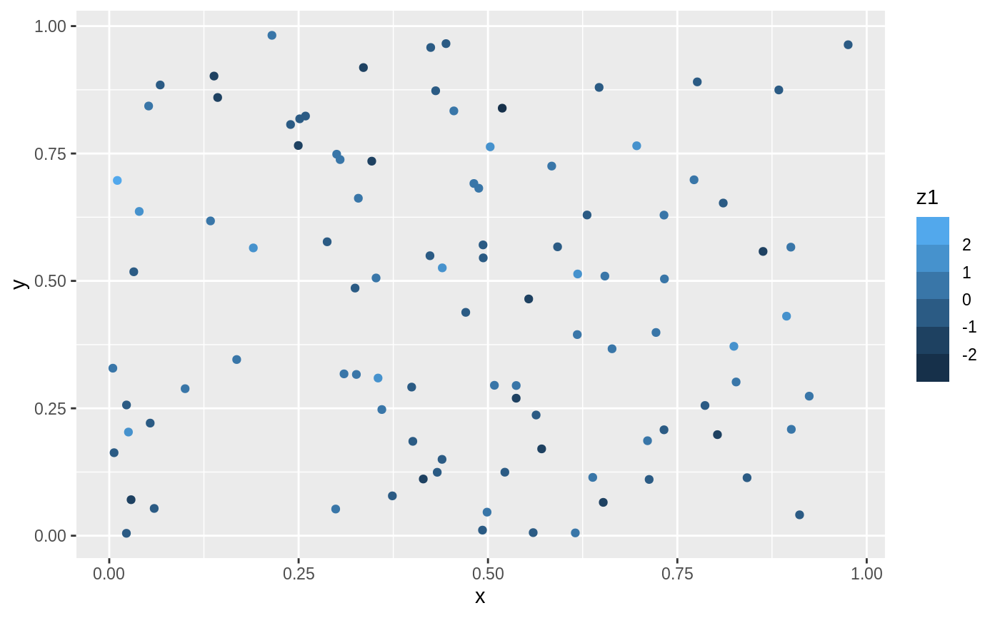
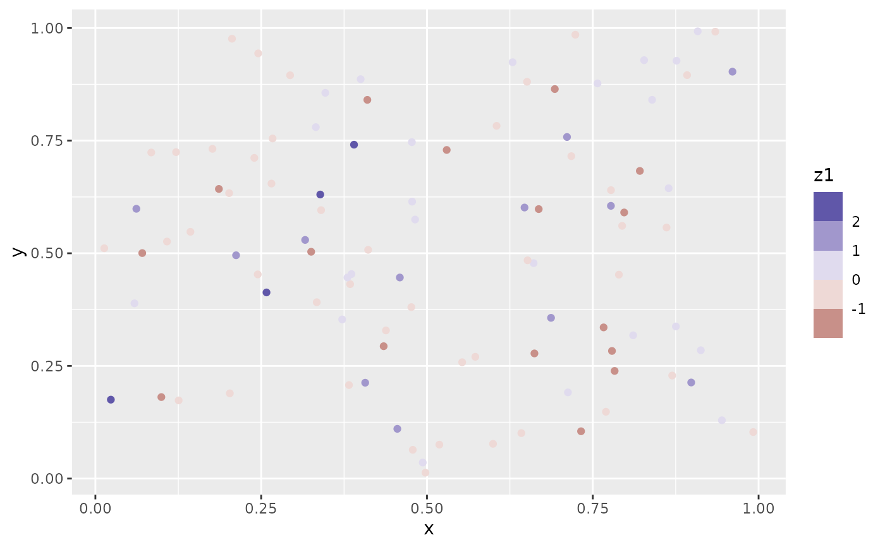
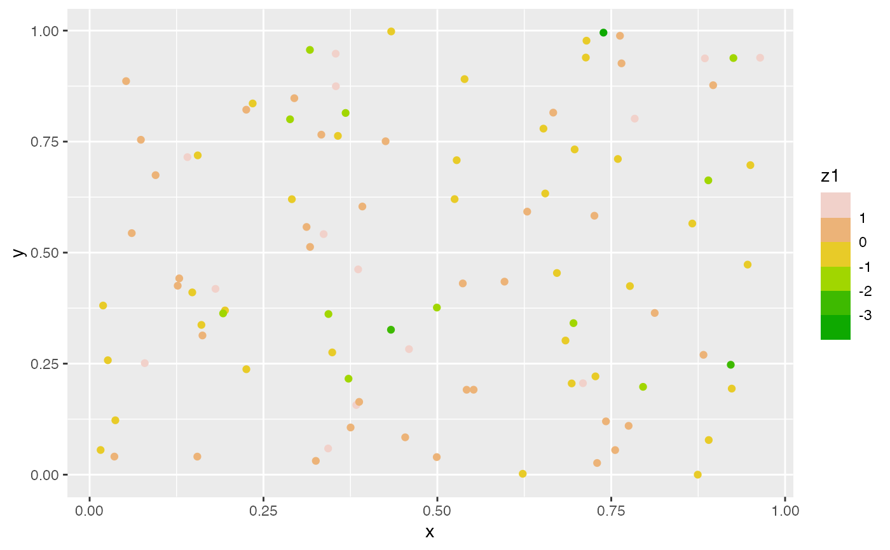

scale_*_steps creates a two colour binned gradient (low-high),
scale_*_steps2 creates a diverging binned colour gradient (low-mid-high),
and scale_*_stepsn creates a n-colour binned gradient. These scales are
binned variants of the gradient scale family and
works in the same way.
Usage
scale_colour_steps(
name = waiver(),
...,
low = "#132B43",
high = "#56B1F7",
space = "Lab",
na.value = "grey50",
guide = "coloursteps",
aesthetics = "colour"
)
scale_colour_steps2(
name = waiver(),
...,
low = muted("red"),
mid = "white",
high = muted("blue"),
midpoint = 0,
space = "Lab",
na.value = "grey50",
transform = "identity",
guide = "coloursteps",
aesthetics = "colour"
)
scale_colour_stepsn(
name = waiver(),
...,
colours,
values = NULL,
space = "Lab",
na.value = "grey50",
guide = "coloursteps",
aesthetics = "colour",
colors
)
scale_fill_steps(
name = waiver(),
...,
low = "#132B43",
high = "#56B1F7",
space = "Lab",
na.value = "grey50",
guide = "coloursteps",
aesthetics = "fill"
)
scale_fill_steps2(
name = waiver(),
...,
low = muted("red"),
mid = "white",
high = muted("blue"),
midpoint = 0,
space = "Lab",
na.value = "grey50",
transform = "identity",
guide = "coloursteps",
aesthetics = "fill"
)
scale_fill_stepsn(
name = waiver(),
...,
colours,
values = NULL,
space = "Lab",
na.value = "grey50",
guide = "coloursteps",
aesthetics = "fill",
colors
)Arguments
- name
The name of the scale. Used as the axis or legend title. If
waiver(), the default, the name of the scale is taken from the first mapping used for that aesthetic. IfNULL, the legend title will be omitted.- ...
Arguments passed on to
binned_scalen.breaksThe number of break points to create if breaks are not given directly.
nice.breaksLogical. Should breaks be attempted placed at nice values instead of exactly evenly spaced between the limits. If
TRUE(default) the scale will ask the transformation object to create breaks, and this may result in a different number of breaks than requested. Ignored if breaks are given explicitly.oobOne of:
Function that handles limits outside of the scale limits (out of bounds). Also accepts rlang lambda function notation.
The default (
scales::squish()) squishes out of bounds values into range.scales::censor for replacing out of bounds values with
NA.scales::squish_infinite()for squishing infinite values into range.
rightShould the intervals be closed on the right (
TRUE, default) or should the intervals be closed on the left (FALSE)? 'Closed on the right' means that values at break positions are part of the lower bin (open on the left), whereas they are part of the upper bin when intervals are closed on the left (open on the right).show.limitsshould the limits of the scale appear as ticks
breaksOne of:
NULLfor no breakswaiver()for the default breaks computed by the transformation objectA numeric vector of positions
A function that takes the limits as input and returns breaks as output (e.g., a function returned by
scales::extended_breaks()). Note that for position scales, limits are provided after scale expansion. Also accepts rlang lambda function notation.
labelsOne of:
NULLfor no labelswaiver()for the default labels computed by the transformation objectA character vector giving labels (must be same length as
breaks)An expression vector (must be the same length as breaks). See ?plotmath for details.
A function that takes the breaks as input and returns labels as output. Also accepts rlang lambda function notation.
limitsOne of:
NULLto use the default scale rangeA numeric vector of length two providing limits of the scale. Use
NAto refer to the existing minimum or maximumA function that accepts the existing (automatic) limits and returns new limits. Also accepts rlang lambda function notation. Note that setting limits on positional scales will remove data outside of the limits. If the purpose is to zoom, use the limit argument in the coordinate system (see
coord_cartesian()).
trans![[Deprecated]](figures/lifecycle-deprecated.svg) Deprecated in favour of
Deprecated in favour of
transform.callThe
callused to construct the scale for reporting messages.superThe super class to use for the constructed scale
- low, high
Colours for low and high ends of the gradient.
- space
colour space in which to calculate gradient. Must be "Lab" - other values are deprecated.
- na.value
Colour to use for missing values
- guide
Type of legend. Use
"colourbar"for continuous colour bar, or"legend"for discrete colour legend.- aesthetics
Character string or vector of character strings listing the name(s) of the aesthetic(s) that this scale works with. This can be useful, for example, to apply colour settings to the
colourandfillaesthetics at the same time, viaaesthetics = c("colour", "fill").- mid
colour for mid point
- midpoint
The midpoint (in data value) of the diverging scale. Defaults to 0.
- transform
For continuous scales, the name of a transformation object or the object itself. Built-in transformations include "asn", "atanh", "boxcox", "date", "exp", "hms", "identity", "log", "log10", "log1p", "log2", "logit", "modulus", "probability", "probit", "pseudo_log", "reciprocal", "reverse", "sqrt" and "time".
A transformation object bundles together a transform, its inverse, and methods for generating breaks and labels. Transformation objects are defined in the scales package, and are called
transform_<name>. If transformations require arguments, you can call them from the scales package, e.g.scales::transform_boxcox(p = 2). You can create your own transformation withscales::new_transform().- colours, colors
Vector of colours to use for n-colour gradient.
- values
if colours should not be evenly positioned along the gradient this vector gives the position (between 0 and 1) for each colour in the
coloursvector. Seerescale()for a convenience function to map an arbitrary range to between 0 and 1.
Details
Default colours are generated with munsell and
mnsl(c("2.5PB 2/4", "2.5PB 7/10")). Generally, for continuous
colour scales you want to keep hue constant, but vary chroma and
luminance. The munsell package makes this easy to do using the
Munsell colour system.
See also
scales::pal_seq_gradient() for details on underlying palette,
scale_colour_gradient() for continuous scales without binning.
The documentation on colour aesthetics.
The binned colour scales section of the online ggplot2 book.
Other colour scales:
scale_alpha(),
scale_colour_brewer(),
scale_colour_continuous(),
scale_colour_gradient(),
scale_colour_grey(),
scale_colour_hue(),
scale_colour_identity(),
scale_colour_manual(),
scale_colour_viridis_d()
Examples
set.seed(1)
df <- data.frame(
x = runif(100),
y = runif(100),
z1 = rnorm(100)
)
# Use scale_colour_steps for a standard binned gradient
ggplot(df, aes(x, y)) +
geom_point(aes(colour = z1)) +
scale_colour_steps()

# Get a divergent binned scale with the *2 variant
ggplot(df, aes(x, y)) +
geom_point(aes(colour = z1)) +
scale_colour_steps2()

# Define your own colour ramp to extract binned colours from
ggplot(df, aes(x, y)) +
geom_point(aes(colour = z1)) +
scale_colour_stepsn(colours = terrain.colors(10))
